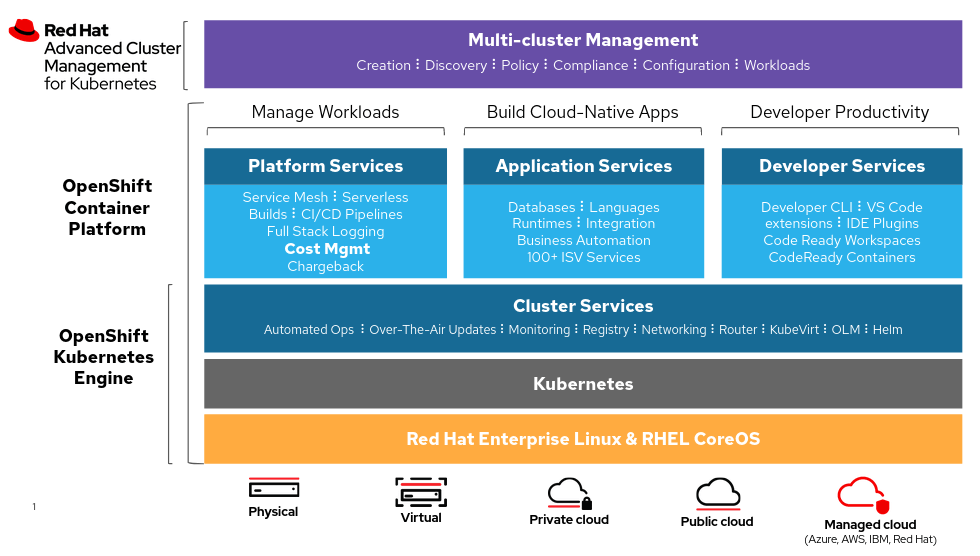

Managing OpenShift Clusters

Managing OpenShift clusters involves several key components and tools designed to streamline the administration and monitoring of cluster resources and activities. This post outlines the main features visible in an administrative view of an OpenShift cluster.
Key Components
1. Navigation Menu (Left Sidebar)
The navigation menu is the primary means of accessing different sections and functionalities within the OpenShift console. Here are the key sections:
-
Home: Provides a dashboard overview.
-
Operators: Manages and installs operators.
-
Workloads: Manages applications, deployments, and pods.
-
Networking: Configures networking settings.
-
Storage: Manages storage options.
-
Builds: Manages build configurations.
-
Pipelines: Manages CI/CD pipelines.
-
Observe: Monitors cluster and application performance.
-
User Management: Manages user access and roles.
-
Administration: Accesses administrative settings and configurations.
2. Main Dashboard (Right Panel)
The main dashboard presents a comprehensive overview of the cluster's status and resources. Key sections include:
-
Getting Started Resources: Links to guided documentation and quick start guides.
-
Explore New Admin Features: Provides access to new admin features, API Explorer, OperatorHub, and updates in OpenShift.
-
Details Section: Displays information about the cluster, such as API address, cluster ID, infrastructure provider, OpenShift version, and update channel. (Note: In the screenshot, all these fields are marked as "Not available.")
-
Status: Gives an overview of the cluster's health, including control plane, insights, dynamic plugins, and storage.
-
Cluster Inventory: Provides information about cluster resources.
-
Activity: Shows ongoing activities and recent events, including sync operations and alerts like PodStuckCrashLoopBackOff and PodCPULoadHigh.
3. User Interface Elements
The top right corner of the interface includes user information, notifications, help section, and settings. Notable elements include:
-
User Information: Displays the logged-in user.
-
Notifications: Shows the number of notifications.
-
Help Section: Offers assistance and support.
-
Settings: Accesses configuration settings.
Conclusion
The administrative view of an OpenShift cluster provides a robust set of tools and features to effectively manage and monitor the cluster. The intuitive layout, with a detailed navigation menu and an informative main dashboard, ensures that administrators can efficiently handle various aspects of cluster management, from user access to resource allocation and monitoring.
For further details, refer to the OpenShift Documentation, which offers comprehensive guides and tutorials on managing OpenShift clusters.
Examples Of Yaml To Define
Sure, here are some YAML examples for managing various aspects of OpenShift clusters:
1. Pod Definition
apiVersion: v1
kind: Pod
metadata:
name: example-pod
namespace: default
spec:
containers:
- name: nginx-container
image: nginx:latest
ports:
- containerPort: 80
2. Deployment
apiVersion: apps/v1
kind: Deployment
metadata:
name: example-deployment
namespace: default
spec:
replicas: 3
selector:
matchLabels:
app: example-app
template:
metadata:
labels:
app: example-app
spec:
containers:
- name: nginx-container
image: nginx:latest
ports:
- containerPort: 80
3. Service
apiVersion: v1
kind: Service
metadata:
name: example-service
namespace: default
spec:
selector:
app: example-app
ports:
- protocol: TCP
port: 80
targetPort: 80
type: ClusterIP
4. Ingress
apiVersion: networking.k8s.io/v1
kind: Ingress
metadata:
name: example-ingress
namespace: default
annotations:
nginx.ingress.kubernetes.io/rewrite-target: /
spec:
rules:
- host: example.com
http:
paths:
- path: /
pathType: Prefix
backend:
service:
name: example-service
port:
number: 80
5. ConfigMap
apiVersion: v1
kind: ConfigMap
metadata:
name: example-config
namespace: default
data:
example.property: "exampleValue"
another.property: "anotherValue"
6. Secret
apiVersion: v1
kind: Secret
metadata:
name: example-secret
namespace: default
type: Opaque
data:
username: YWRtaW4=
password: MWYyZDFlMmU2N2Rm
7. PersistentVolume
apiVersion: v1
kind: PersistentVolume
metadata:
name: example-pv
spec:
capacity:
storage: 10Gi
accessModes:
- ReadWriteOnce
persistentVolumeReclaimPolicy: Retain
storageClassName: manual
hostPath:
path: /mnt/data
8. PersistentVolumeClaim
apiVersion: v1
kind: PersistentVolumeClaim
metadata:
name: example-pvc
namespace: default
spec:
accessModes:
- ReadWriteOnce
resources:
requests:
storage: 10Gi
storageClassName: manual
9. Role
apiVersion: rbac.authorization.k8s.io/v1
kind: Role
metadata:
namespace: default
name: example-role
rules:
- apiGroups: [""]
resources: ["pods"]
verbs: ["get", "watch", "list"]
10. RoleBinding
apiVersion: rbac.authorization.k8s.io/v1
kind: RoleBinding
metadata:
name: example-rolebinding
namespace: default
subjects:
- kind: User
name: "example-user"
apiGroup: rbac.authorization.k8s.io
roleRef:
kind: Role
name: example-role
apiGroup: rbac.authorization.k8s.io
These YAML files cover a range of common resources and configurations you might manage within an OpenShift cluster. Adjust the fields as necessary to fit your specific use cases and environment.
Imported from rifaterdemsahin.com · 2024